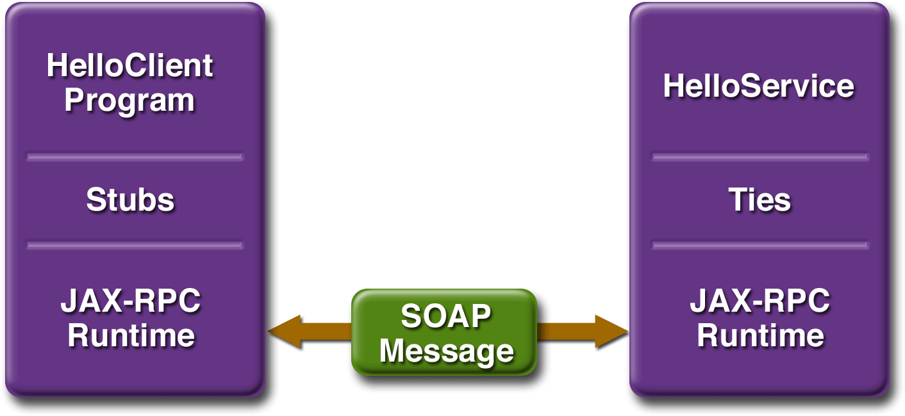

www.netbeans.org
Feedback
java.sun.com
|
Download
www.netbeans.org |
|
API
Feedback java.sun.com |
Creating a Simple Web Service and Client with JAX-RPC
This section shows how to build, deploy, and consume a simple web service. You will learn about two types of web service clients in this section. Both are static-stub clients, which means that they call the web service through a stub, a local object that acts as a proxy for the remote service. The difference between the two clients in this section is that one is portable, because it adheres to the J2EE 1.4 specification, while the other is not. A later section, Web Service Clients, provides examples of additional JAX-RPC clients that access the service. The code for the service is in
<INSTALL>/j2eetutorial14/examples/jaxrpc/helloservice.The portable client is in<INSTALL>/j2eetutorial14/examples/jaxrpc/webclientand the client that is implementation-specific is in<INSTALL>/j2eetutorial14/examples/jaxrpc/staticstub.Figure 2-1 illustrates how JAX-RPC technology manages communication between a web service and client.

Figure 2-1 Communication Between a JAX-RPC Web Service and a Client
The starting point for developing a JAX-RPC web service is the service endpoint interface. A service endpoint interface (SEI) is a Java interface that declares the methods that a client can invoke on the service.
You run the
wscompiletool which is bundled with the Application Server from the IDE. Thewscompiletool processes the SEI and two configuration files to generate the WSDL specification of the web service and the stubs that connect a web service client to the JAX-RPC runtime. For reference documentation onwscompile, see the Application Server man pages athttp://docs.sun.com/db/doc/817-6092.Together, the
wscompiletool, the IDE, and the Application Server provide the Application Server's implementation of JAX-RPC.These are the basic steps for creating the web service and client in the IDE:
- Generate the SEI, the implementation class, and the interface configuration file. Code the implementation class.
- Compile the SEI and implementation class. During this step, the
wscompiletool is called from the IDE to generate the files required to deploy the service.- Package and deploy the WAR file. The tie classes (which are used to communicate with clients) are generated by the Application Server during deployment.
- Generate and code the client class and WSDL configuration file.
- Compile the client class. During this step, the
wscompiletool is called from the IDE to generate and compile the stub files.- Package and run the client class.
The sections that follow cover these steps in greater detail.
Generating and Coding the Service Endpoint Interface and Implementation Class
In this example, the service endpoint interface declares a single method named
sayHello. This method returns a string that is the concatenation of the stringHellowith the method parameter.A service endpoint interface must conform to a few rules:
- It extends the
java.rmi.Remoteinterface.- It must not have constant declarations, such as
public final static.- The methods must throw the
java.rmi.RemoteExceptionor one of its subclasses. (The methods may also throw service-specific exceptions.)- Method parameters and return types must be supported JAX-RPC types (see Types Supported by JAX-RPC).
To generate the SEI, the implementation class, and the interface configuration file, use the IDE as follows:
- Choose File
New Project. In the Categories tree, choose Web. Under Projects, choose Web Application. Click Next.
- In the Project Name field, type
helloservice. In the Project Location field, browse to the location where all your projects are stored. In the Server field, make sure that the Sun Java System Application Server Platform Edition is selected. (If the Sun Java System Application Server is not available in the Server field, you need to register it in the IDE. Choose Tools- Right-click
helloservicein the Projects window. Choose NewHello. In the Package field, typehelloservice. Click Finish.- Expand the Web Services node in the Projects window, right-click the
Hellonode, and choose Add Operation. In the Name field, typesayHello.In the Return Type field, chooseString.- Click Add. Leave the Type as
String.In the Name field, types. Click OK and then click OK again.- Add
public String message = "Hello ";below theHelloImplclass declaration.- Implement the
sayHellooperation by replacing the defaultreturn nullwithreturn message + s.- Right-click the project node, choose Properties, click Web Services in the Project Properties dialog box, and unselect the options
documentliteral,strict, anduseonewayoperations.Expand the Source Packages node in the Projects window. Then expand the
helloservicepackage node. In this example, the service endpoint interface that the IDE generates for you is namedHelloSEI. Double-click it in the Projects window to view it in the Source Editor:package helloservice; import java.rmi.Remote; import java.rmi.RemoteException; public interface HelloSEI extends Remote { public String sayHello(String s) throws RemoteException; }In addition to the interface, you'll need the class that implements the interface. In this example, the implementation class is called
HelloImpl. Double-click it in the Projects window to view it in the Source Editor:package helloservice; public class HelloImpl implements HelloSEI { public String message ="Hello"; public String sayHello(String s) { return message + s; } }Building the Service
To build the
helloservice, right-click the node in the Projects window and choose Build Project. The Build Project command executes several subtasks in your Ant build script, the most important of which are the following:The compile Task
This task compiles
HelloSEI.javaandHelloImpl.java, writing the class files to thebuild/web/WEB-INF/classessubdirectory, which you can view in the Files window (Ctrl-2).The Hello_wscompile Task
The
Hello_wscompiletask runswscompile, which creates the WSDL and mapping files. You can view them by going to thebuild/web/WEB-INFsubdirectory and thebuild/web/WEB-INF/wsdlsubdirectory in the Files window. The WSDL file describes the web service and is used to generate the client stubs for Static Stub Clients. The mapping file contains information that correlates the mapping between the Java interfaces and the WSDL definition. It is meant to be portable so that any J2EE-compliant deployment tool can use this information, along with the WSDL file and the Java interfaces, to generate stubs and ties for the deployed web services.The files created in this example are
Hello.wsdlandHello-mapping.xml. TheHello_wscompiletask runswscompilewith the following main arguments:wscompile define="true" nonClassDir="${build.web.dir.real}/WEB-INF/wsdl" mapping="${build.web.dir.real}/WEB-INF/${Hello.mapping}" config="${src.dir}/${Hello.config.name}" features="${wscompile.service.Hello.features}" sourceBase="${build.generated.dir}/wsservice"The
defineoption instructswscompileto create WSDL and mapping files. Themappingoption specifies the mapping file name. The other options specify various properties that are set in thenbproject/project.propertiesfile. Thewscompiletool reads an interface configuration file that specifies information about the SEI. In this example, the configuration file is namedHello-config.xmland contains the following:<?xml version="1.0" encoding="UTF-8"?> <configuration xmlns="http://java.sun.com/xml/ns/jax-rpc/ri/config"> <service name="Hello" targetNamespace="urn:Hello/wsdl" typeNamespace="urn:Hello/types" packageName="helloservice"> <interface name="helloservice.HelloSEI" servantName='helloservice.HelloImpl' </interface> </service> </configuration>This configuration file tells
wscompileto create a WSDL file namedHello.wsdlwith the following information:
- The service name is
Hello.- The WSDL target is
urn:Hello/wsdland the type namespace is urn:Hello/types. The choice for what to use for the namespaces is up to you. The role of the namespaces is similar to the use of Java package names--to distinguish names that might otherwise conflict. For example, a company can decide that all its Java code should be in the packagecom.wombat.*. Similarly, it can also decide to use the namespacehttp://wombat.com.- The SEI is
helloservice.HelloSEI.The
packageNameattribute instructswscompileto put the service classes into thehelloservicepackage.The dist Task
This task packages the service and the deployment descriptor into a WAR file in the
distfolder, which you can view in the Files window.Specifying the Endpoint Address
To access
helloservice, the tutorial clients will specify this service endpoint address URI:The
/helloservicestring is the context root of the servlet that implements the service. The/Hellostring is the servlet alias. You already set the context root when you created the web application above. To specify the endpoint address, set the alias as follows:Deploying the Service
In the IDE, perform these steps:
You can view the WSDL file of the deployed service by requesting the URL
http://localhost:8080/helloservice/Hello?WSDLin a web browser. Now you are ready to create a client that accesses this service.Undeploying the Service
At this point in the tutorial, do not undeploy the service. When you are finished with this example, you can undeploy the service by expanding the Servers node in the Runtime window, then the node for the server, then right-click the node for the service, and choose Undeploy.
Static Stub Clients
You will create a stand-alone program that calls the
sayHellomethod of thehelloservice. It makes this call through a stub, a local object that acts as a proxy for the remote service. Because the stub is created bywscompileat development time (as opposed to runtime), it is usually called a static stub. You can runwscompilefrom the IDE to generate the stub in one of two ways:J2EE Container-Generated Static Stub Client
To generate the static stub client, use the IDE as follows:
- Choose File
- In the Project Name field, type
HelloClientProject. In the Project Location field, browse to the location where all your projects are stored. In the Server field, make sure that the Sun Java System Application Server Platform Edition 8.1 is selected. Click Finish.- Right-click
HelloClientProjectin the Projects window. Choose New- Click Retrieve WSDL to test the location. If the WSDL name is returned, the test has succeeded. In the Package field, type
helloclientservice. In the Web Service Client Type list, choose J2EE Container- Generated Static Stub.- Right-click the
HelloClientProjectnode and choose NewHelloServlet.In the Package field, typewebclient.Click Next and click Finish.- Right-click within the
processRequestmethod and choose Web Service Client ResourcessayHellooperation and click OK. Now fill out the skeleton code so that the content of its<body>tags looks as follows:out.println("<body>"); String username = request.getParameter("username"); if (username != null && username.length() > 0) { try { out.println("<img src=\"duke.waving.gif\">"); out.println("<h2><font color=\"black\">"); out.println(getHelloSEIPort().sayHello(username)); out.println("</font></h2>"); } catch(java.rmi.RemoteException ex) { ex.printStackTrace(out); } } else { out.println("You didn't specify your name.<br/>"); } out.println("<a href=\"index.jsp\">back</a>"); out.println("</body>");- Expand the project's Web Pages node, double-click the default index.jsp file, and replace the <body> tags with the following code:
<body bgcolor="white"> <img src="duke.waving.gif"> <h2>Hello, my name is Duke. What's yours?</h2> <form method="get" action="HelloServlet"> <input type="text" name="username" size="25"> <br/> <input type="submit" value="Submit"> <input type="reset" value="Reset"> </form> </body>- Go to
<INSTALL>/j2eetutorial14/examples/jaxrpc/webclient/weband copy theduke.waving.giffile into your project'swebdirectory.Building and Deploying the Static Stub Client
In the IDE, perform these steps:
This task invokes the web service client. When you run this task, the browser opens, the application is displayed, and you can submit a name, and a greeting is returned.
IDE-Generated Static Stub Client
To build, package, and run the client, follow these steps:
- Choose File
<INSTALL>/j2eetutorial14/examples/jaxrpc/staticstub/, select the project, and choose Open Project.- The project prompts you to set up a library named "jax-rpc". The library should contain JAR files that are needed by the project. Right-click the project and choose Resolve Reference Problems. Click Resolve. Click New Library and name the library
jax-rpc.Click Add JAR/Folder and navigate to thelibdirectory in your application server installation. Selectactivation.jar, dom.jar, j2ee.jar, jaxrpc-api.jar, jaxrpc-impl.jar, jhall.jar, mail.jar, saaj-impl.jar, xercesImpl.jarand click OK.- In the Projects window, right-click the project and choose Run Project. The IDE builds, packages, and runs the project.
- In the Output window, the client displays the following output:
Before it can invoke the remote methods on the stub, the client performs these steps:
- Creates a
Stubobject:
(Stub)(new Hello_Impl().getHelloSEIport())The code in this method is implementation-specific because it relies on a
Hello_Implobject, which is not defined in the specifications. TheHello_Implclass will be generated bywscompilein the following section.- Sets the endpoint address that the stub uses to access the service:
stub._setProperty
(javax.xml.rpc.Stub.ENDPOINT_ADDRESS_PROPERTY, args[0]);At runtime, the endpoint address is passed to
HelloClientinargs[0]as a command-line parameter, which the IDE gets from theendpoint.addressproperty in thebuild.propertiesfile. This address must match the one you set for the service in Specifying the Endpoint Address.- Casts
stubto the service endpoint interface,HelloSEI:
HelloSEI hello = (HelloSEI)stub;Here is the full source code listing for the
HelloClient.javafile, which is located in the directory<INSTALL>/j2eetutorial14/examples/jaxrpc/staticstub/src/:package staticstub; import javax.xml.rpc.Stub; public class HelloClient { private String endpointAddress; public static void main(String[] args) { System.out.println("Endpoint address = " + args[0]); try { Stub stub = createProxy(); stub._setProperty (javax.xml.rpc.Stub.ENDPOINT_ADDRESS_PROPERTY, args[0]); HelloSEI hello = (HelloSEI)stub; System.out.println(hello.sayHello("Duke!")); } catch (Exception ex) { ex.printStackTrace(); } } private static Stub createProxy() { // Note: Hello_Impl is implementation-specific. return (Stub) (new Hello_Impl().getHelloSEIPort()); } }Building the Static Stub Client
To build the client, right-click its node in the Projects window and choose Build Project. The Build Project command executes several subtasks in your Ant build script, the most important of which are the following:
Running the Static Stub Client
In the IDE, perform these steps:
This task invokes the web service client. When you run this task, you should get the following output:
|
Download
www.netbeans.org |
|
API
Feedback java.sun.com |
All of the material in The J2EE(TM) 1.4 Tutorial is copyright-protected and may not be published in other works without express written permission from Sun Microsystems.